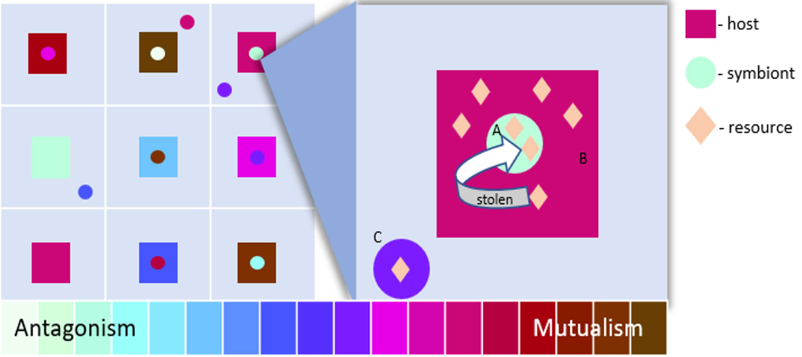

Overview
The goal of Symbulation is to provide an evolutionary agent-based framework for studying the evolution of symbiosis. It supports a population of hosts and a population of symbionts. The symbionts can live inside of hosts (endosymbionts) or outside of hosts (free-living and/or ectosymbionts). The hosts and symbionts can engage in a relationship anywhere between full antagonism/parasitism to mutualism.

If you haven’t already, we recommend first taking a look at the browser-based GUI.
Then you can start with the Default Mode guide, which includes running Symbulation both from the command line and a local browser-based GUI.